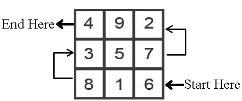
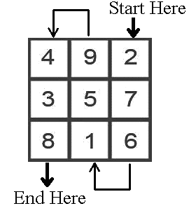

Kabalistic/Magickal Square of Saturn for empowering chakras, and spiritual workings related to Saturn


Kabalistic/Magickal Square of Saturn for material
and earthly [nonspiritual]
affairs related to Saturn

WARNING!
ACCORDING TO ALL OF THE MAIN TRADITIONAL TEXTS CONCERNING MANTRAS [THE MANTRAS HERE ARE STANDARD MANTRAS FOR THE PLANETS], THEY READ THAT THE SATURN MANTA/WORKING WILL "OFFSET" THE NEGATIVE TENDENCIES OF SATURN, ESPECIALLY DURING A HARD SATURN TRANSIT. MY OWN PERSONAL EXPERIENCE WITH THIS AND OF A FEW OTHERS WHO PERFORMED THIS WORKING HAVE FOUND THE OPPOSTITE TO BE TRUE, EVEN WHEN SATURN WAS NOT ACTIVE IN NEGATIVELY ASPECTING ANY OTHER PLANETS IN THE CHART. ALMOST IMMEDIATELY, UNFORTUNATE EVENTS CONNECTED WITH THE HOUSE SATURN TENTATED BEGAN TO HAPPEN. IF YOU FEEL YOU MUST DO THE WORKING BELOW, THEN BE WARNED AND PROCEED WITH CAUTION!
AS FOR THE OTHER PLANETARY SQUARES, THEY ALL WORKED OUT FINE AND IN A POSITIVE MANNER. SATURN HAS ALWAYS BEEN A MALEFIC IN MANY RESPECTS. THIS DOES NOT MEAN THAT THE SATURN ENERGIES CANNOT BE DIRECTED POSITIVELY. JUST BE WARNED AND IF YOU DECIDE TO DO THE WORKING FOR SATURN, BE AWARE.
The mantra for Saturn is for 9 days in a row. It is important never to skip any days, as this will cancel out the entire work.
Begin the mantra when Saturn is strong in its home signs of Capricorn or Aquarius, or when it is in its exalted sign of Libra.
DO NOT begin this mantra when Saturn is in the signs of Aries [its fall] or Cancer or Leo [its detriment].
Begin the mantra on a Saturday during the hours of Saturn.
Ideally, each day, the mantra chosen for Saturn should be recited during the hours of Saturn for that day. This is ideal, but regardless never skip any days, regardless of the hour.
Ritual/Magickal Rulerships for Saturn:
Suffering, misery, loss, endurance, the father, the aged, discipline, recluses,
restrictions, poverty, delay, defects, fatalities, misers, those who fast or starve,
ascetics, denial, debts, the widowed, corpses, graves, fear, insecurity, disease,
grief, long ties, duty, limitations, time and clocks, patience, serious, skeptical,
pessimistic, learning from mistakes the hard way.
Parts of the body ruled by Saturn: Bones, knees, the ears (hearing, balance), the spleen, the skin, the teeth.
Diseases: Chronic wasting diseases, diseases of the skin, bones and teeth, deafness, vertigo, tinnitus (ringing in the ears), depression, blockages, blood clots, stagnation, kidney stones, arthritis, immune deficiencies.
Professions: Builders, jailers, gravediggers and morticians.
In your astrology chart: The house Saturn is posited in, along with the houses that have the sign of Capricorn on the cusp. [THE SATURN WORKING WILL ACTIVATE THESE AREAS OF YOUR LIFE AND THIS MAY NOT BE FORTUNATE!
The Kabalistic/Magickal planetary square working empowers the base chakra. Saturn when properly directed brings a positive sense of self-discipline, endurance, and organization. Saturn also can bring success and advancement through hard work, especially in the career. [AGAIN...BE AWARE. EVEN WHEN DIRECTED WITH AFFIRMATIONS, UNFORTUNATE EVENTS CAN MANIFEST REGARDLESS].
MANTRA FOR SATURN:
AUM PRAAM PRIM PRAUM SAU SHANISWARA NAMA
One can replace with NAMA with SVAHA ٠ [S-V-AH-HAH]٠ when working for
spiritual goals
Pronunciation:
AHH-UUU-MMM ٠ P-RR-AH – AH-MM ٠ P-RR-EE-MM ٠
P-RR-AH-UUU-MM ٠ SAH-UUU ٠ SH-AH-NEE-SS-VAH-RR-AH ٠
NAH-MAH
AH rhymes with Saw ٠ UUU rhymes with Too ٠ All R's need to be rolled
© Copyright 2011, Joy of Satan Ministries;
Library of Congress Number: 12-16457
Back to Kabalistic/Magickal Squares Main Page
BACK TO SATANIC POWER MEDITATION MAIN PAGE